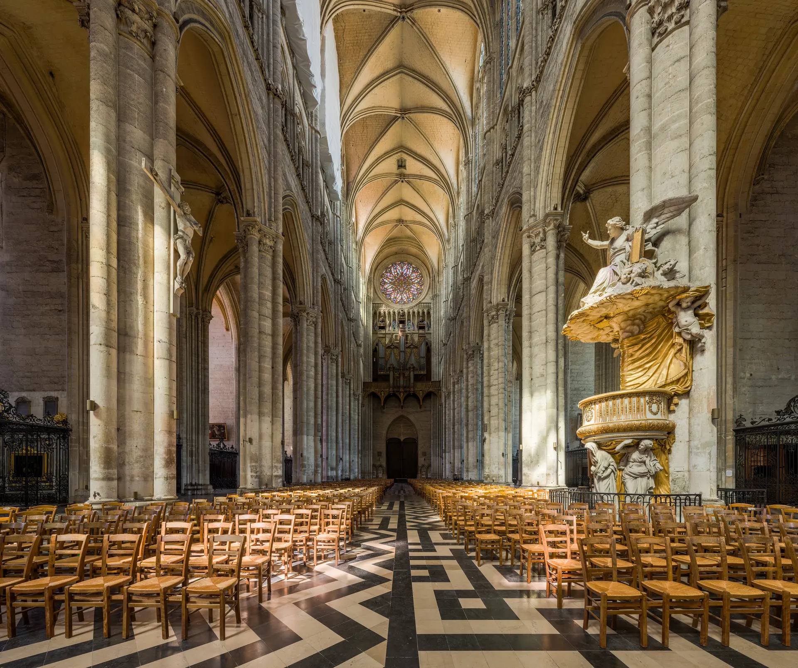
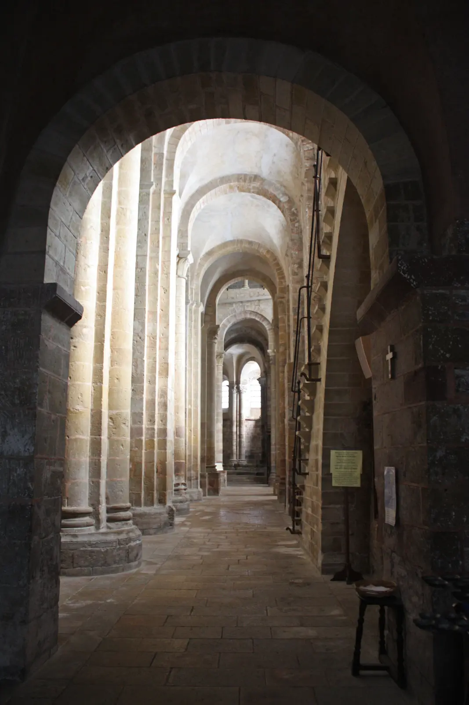
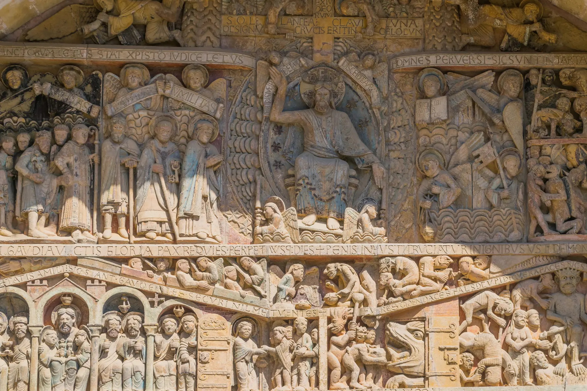
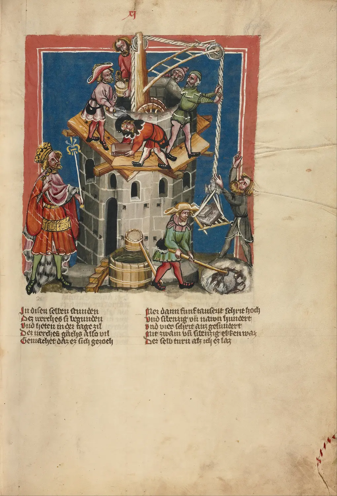
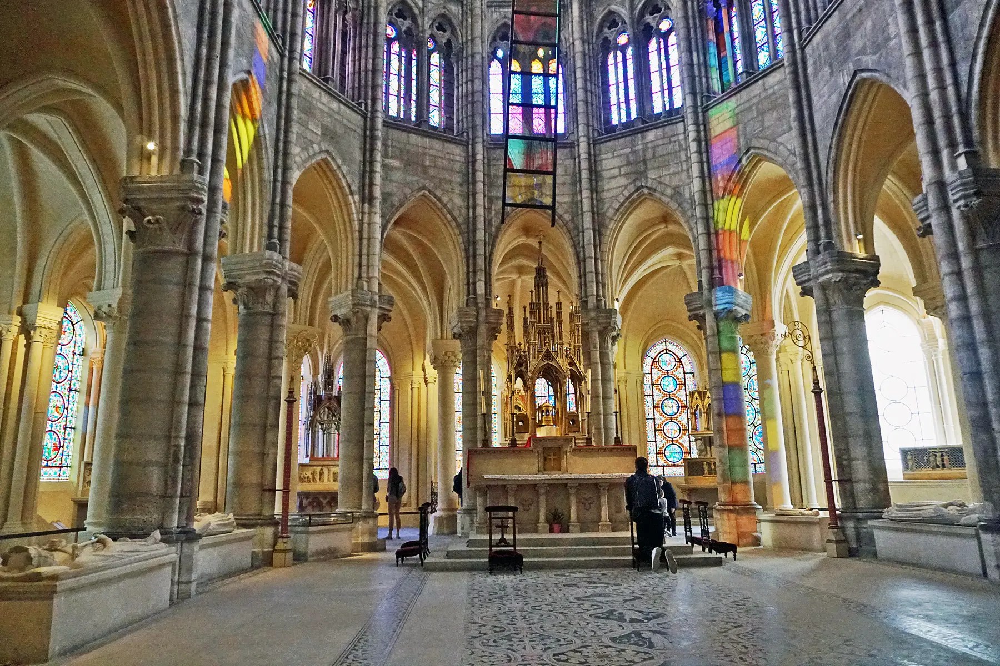
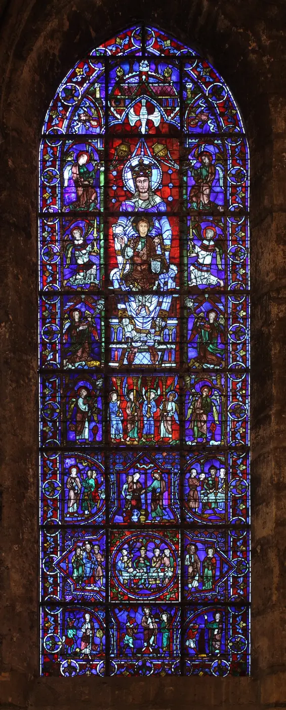
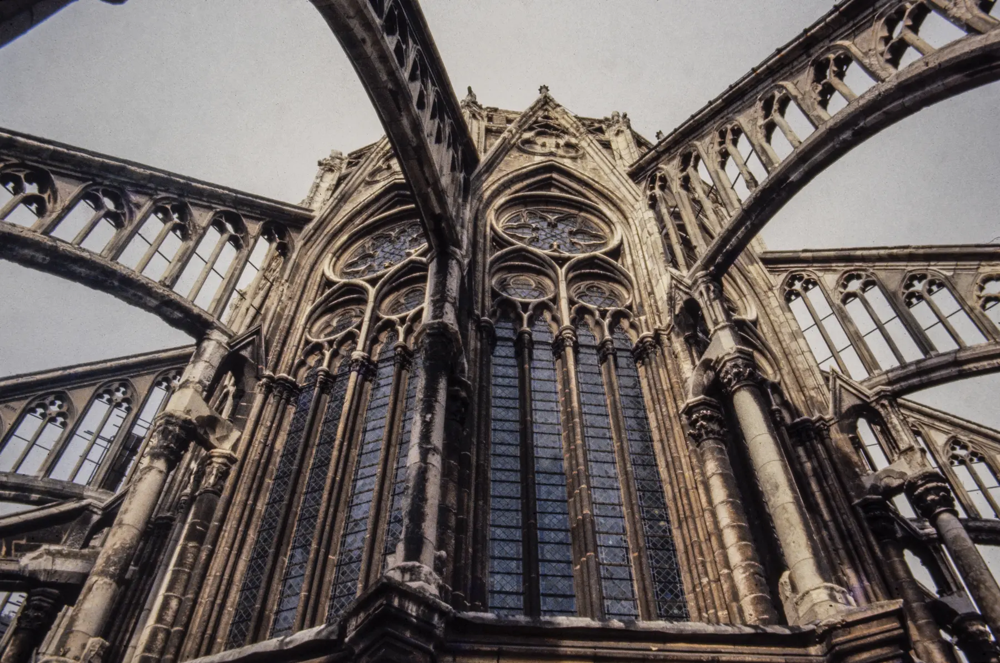

Una soglia visiva
Il mosaico e l’icona orientano lo sguardo e stabiliscono una relazione.

01 · Guarda prima di sapere
Nessun nome, luogo, data o stile. Segui pilastri, archi, finestre e linee. Cerca ciò che pesa e ciò che sembra non pesare.
Dall’immagine allo spazio
Dal modulo 05
Immagini, reliquie, canto e processioni avevano reso presente il sacro. Ora la domanda cambia scala: in quale spazio può una comunità incontrarlo?
Il mosaico e l’icona orientano lo sguardo e stabiliscono una relazione.
Ingresso, navata, altare, reliquia, suono e luce ordinano il movimento.
L’edificio concentra lavoro, poteri, ricchezza, fede, competizione e conflitto.
La cattedrale non è soltanto un edificio religioso. È una macchina materiale, sociale, economica, politica, liturgica e simbolica.
Un’Europa che ricomincia a muoversi
XI–XIII secolo · tempi e regioni differenti
Innovazioni agrarie, espansione delle superfici coltivate e climi favorevoli in alcune fasi sostennero una crescita diseguale. Villaggi e città aumentarono; mercati, fiere, monasteri e pellegrinaggi misero in circolo merci, uomini, tecniche e notizie. Questa mobilità conviveva con carestie, guerre, dipendenze signorili, esclusioni e violenza.
Produzione e popolazione crescono in modo non uniforme; il surplus alimenta centri e cantieri.
Monasteri, reliquie e pellegrinaggi collegano luoghi lontani e attirano doni.
Mercati, mestieri e istituzioni comunali ridisegnano strade, piazze e gerarchie.
Signori, vescovi, capitoli, monarchie e comuni cooperano e competono.
Occidente latino, Bisanzio, società islamiche ed ebraiche scambiano saperi e oggetti anche dentro rapporti conflittuali.
La crescita non cancella servitù, tassazione, marginalità, persecuzioni e rivolte.
“Secoli bui” non spiega nulla. Dopo Roma non esiste un blocco immobile: istituzioni, economie e culture si ricompongono con ritmi differenti. La crescita non fu lineare né uguale per tutti.

Il Romanico: dare un corpo alla comunità
Sainte-Foy · Conques
“Romanico” è una categoria storiografica moderna, non il nome di uno stile unico riconosciuto dagli uomini dell’XI secolo. A Conques, una chiesa legata al pellegrinaggio verso Santiago, pilastri, campate, tribune, transetto, deambulatorio e cappelle permettono di avvicinarsi alle reliquie senza interrompere ogni azione liturgica.
La massa muraria non è l’espressione automatica di una vaga “mentalità medievale”: risponde a volte in pietra, scale, percorsi, disponibilità tecniche e trasformazioni successive. Pisa, Modena, Tolosa e Firenze elaborano soluzioni differenti per materiali, tradizioni e società.
Pareti e sostegni ricevono spinte e delimitano lo spazio.
Il ritmo rende misurabile il percorso.
La presenza sacra produce movimento, doni e prestigio.
Non ogni zona è accessibile nello stesso modo a ogni corpo.
La soglia scolpita

Tra città e spazio sacro
Il portale agisce sul corpo: lo rallenta, lo orienta, distingue un fuori da un dentro. Cristo domina l’asse; beati e dannati, angeli, demoni, iscrizioni e gesti trasformano la soglia in ordine visivo, ammonimento e manifestazione d’autorità.
Non è una semplice “Bibbia dei poveri”. Le immagini potevano istruire, ricordare, impressionare, accompagnare predicazione e rito; il loro significato dipendeva da luogo, parole, conoscenze e pratiche dello spettatore.

Il cantiere costruisce la città
Pietra, denaro, rischio, tempo
Vescovi e capitoli, sovrani, aristocrazie, comuni e donatori negoziano il finanziamento. Cave, boschi, strade e fiumi alimentano il cantiere; maestri costruttori coordinano scalpellini, carpentieri, fabbri, vetrai e trasportatori. Impalcature cedono, progetti cambiano, incendi e mancanza di fondi interrompono lavori che possono durare generazioni.
Decide, raccoglie fondi, sceglie priorità, trasforma il tempio in prestigio.
Saperi mobili e specializzati; alcuni nomi sono documentati, come quello di Gislebertus ad Autun, pur con discussioni sul suo ruolo.
Offerte, imposte, lavoro e consumo sostengono il progetto senza produrre concordia perfetta.
Costi, giurisdizioni, salari, incidenti e concorrenza rendono il cantiere un luogo politico.
Nessun anonimato universale. Molti artefici restano senza nome nei documenti sopravvissuti; altri firmarono o furono registrati. L’assenza del nome non prova una rinuncia volontaria all’identità.
Quando la città vuole essere vista
Profilo urbano, processione, concorrenza
Una grande chiesa rende visibile il vescovo o il sovrano, rappresenta una comunità civica, custodisce reliquie, attrae pellegrini e modifica strade, piazze e mercati. L’altezza nasce dall’incontro fra fede, liturgia, tecnica, ricchezza, istituzioni e desiderio di superare edifici rivali.
La cattedra e il capitolo rendono il governo ecclesiastico visibile nella città.
Consacrazioni, sepolture e reliquie legano architettura e legittimità dinastica.
La chiesa può diventare emblema civico e polo di una piazza in trasformazione.
Mestieri e donatori entrano nelle finestre, nelle cappelle e nella memoria pubblica.
Il movimento dei corpi sostiene ospitalità, scambi e offerte.
Gerarchie di genere, ceto e religione determinano chi finanzia, chi lavora e chi può occupare lo spazio.
La nascita del Gotico non ha un solo inventore
Saint-Denis · consacrazione del coro nel 1144
L’abate Suger fu committente, politico e autore di testi sulla ricostruzione dell’abbazia reale. Il nuovo coro integrò cappelle, volte costolonate, sostegni e finestre in uno spazio più continuo e luminoso. Ma Suger non inventò da solo il Gotico: archi acuti, costoloni e soluzioni di sostegno avevano precedenti e circolazioni più ampie.
La novità storica sta anche nell’integrazione sistematica, nelle proporzioni e nella scala. Il rapporto diretto fra ogni forma e una “teologia della luce” derivata dallo Pseudo-Dionigi resta un problema storiografico: suggestivo, discusso, non una certezza automatica.
Strutture, aperture, murature, restauri.
I testi di Suger su cantiere, arredi e consacrazione.
La connessione fra spazio, regalità, liturgia e luce.
Una dottrina unica capace di spiegare ogni scelta formale.
“Gotico” è un nome posteriore e polemico. Gli uomini del XIII secolo non chiamavano così le proprie cattedrali.

Interazione principale
Schema semplificato · non in scala
Attiva il sistema nell’ordine storico-didattico proposto. Le frecce mostrano direzioni qualitative delle spinte, non calcolano forze reali.
La campata è ancora un contorno. Attiva il primo sostegno.
Ogni elemento sarà letto su quattro livelli: vista, struttura, spazio, condizione sociale.
0 / 7 elementi attivati
La pietra non perde il proprio peso: viene organizzata in modo che lo spazio possa apparire più leggero.

Quando la luce diventa materia
Chartres · XII–XIII secolo
Il vetro è colorato nella massa o dipinto; grisaille e pigmenti definiscono volti, pieghe e dettagli; strisce di piombo tengono insieme frammenti e disegno. La finestra si legge da lontano, dentro una luce variabile, in rapporto alla liturgia e al movimento.
Storie sacre, donatori, mestieri e poteri entrano nella parete. La luce fisica non diventa spirituale perché smette di essere materia: passa attraverso vetro, colore, polvere, piombo e architettura.
Scegli uno strato: la luce non agisce mai da sola.
Non esiste un solo Gotico
Francia, Inghilterra, Italia
Modelli, maestranze e soluzioni circolano, ma incontrano liturgie, materiali, città e tradizioni differenti. Il Gotico italiano non è francese “riuscito male”.

Francia · XIII secolo
L’altezza della navata e le grandi aperture dipendono da una rete esterna di archi rampanti e contrafforti. L’edificio non elimina la massa: la trasferisce e la rende leggibile anche nel profilo urbano.
Confronto: muro, struttura, luce
Seconda interazione
Seleziona uno spazio e una categoria. Romanico e Gotico si sovrappongono nel tempo; massa e luminosità non sono opposti assoluti; le varianti regionali contano.
L’immagine iniziale, ora identificata
La costruzione della cattedrale attuale iniziò nel 1220. Lo spazio che sembrava privo di peso dipende da sostegni, cave, finanza, maestranze, istituzioni e manutenzione.
Non hai ancora salvato la prima osservazione.
Verifica e recupero
Ricostruire relazioni
Dodici domande. Un errore apre una spiegazione e una domanda differente: il percorso riparte soltanto quando il collegamento essenziale è ricostruito.
Domanda 1 di 12
Società → cantiere → struttura → luce → nuovo spazio
Romanico e Gotico non raccontano il passaggio infantile dal peso alla leggerezza. Mostrano comunità che organizzano materia, lavoro, rito e potere per produrre esperienze differenti dello spazio. La cattedrale eleva lo sguardo perché una città concreta ne sostiene il costo.
Controlla fonti, opere e licenze ↓Fonti e trasparenza
Le fotografie sono locali e utilizzabili offline. Il diagramma della campata è una ricostruzione didattica originale, semplificata e non in scala; non è un rilievo né una simulazione fisica.
Metropolitan Museum of Art · France, 1000–1400
Metropolitan Museum of Art · Low Countries, 1000–1400
Smarthistory · Sainte-Foy at Conques
Smarthistory · Amiens Cathedral
Smarthistory · Gothic architecture
Amiens, navata · David Iliff · CC BY-SA 3.0.
Amiens, archi rampanti · Acroterion · CC BY-SA 4.0.
Conques, interno · Daniel Villafruela · CC BY-SA 3.0.
Conques, timpano · Krzysztof Golik · CC BY-SA 4.0.
Costruzione della torre di Babele · miniatore ignoto · pubblico dominio.
Saint-Denis, coro e deambulatorio · Mariordo · CC BY-SA 4.0.
Chartres, Belle Verrière · Eusebius · pubblico dominio.
Canterbury, coro · Michael D. Beckwith · CC0.
Siena, interno · Superchilum · CC BY-SA 4.0.
| Testimonianza | Datazione prudente | Funzione nel percorso | Nota critica |
|---|---|---|---|
| Sainte-Foy, Conques | XI–XII sec., con fasi successive | Pellegrinaggio, massa, percorso, portale | “Romanico” non indica uniformità europea. |
| Saint-Denis, coro | consacrato nel 1144; trasformato | Integrazione del primo Gotico | Suger è committente decisivo, non inventore unico. |
| Chartres, vetrate | XII–XIII sec., restauri | Materia, luce, mestieri, committenza | La luce dipende da vetro, piombo e architettura. |
| Amiens, cattedrale | dal 1220, campagne successive | Sistema strutturale e scala urbana | Leggerezza percettiva, peso reale redistribuito. |
| Canterbury, coro | ricostruzione dal 1174 | Variante inglese e pellegrinaggio | Romanico e Gotico coesistono nello stesso complesso. |
| Siena, cattedrale | prevalentemente XIII–XIV sec. | Gotico italiano, policromia e città comunale | Non va misurato sulla somiglianza alla Francia. |
{kind=link}
{kind=link}
_-_Collat%C3%A9ral_Sud.jpg){kind=link}
{kind=link}
{kind=link}
{kind=link}
{kind=link}
.jpeg){kind=link}
{kind=link}